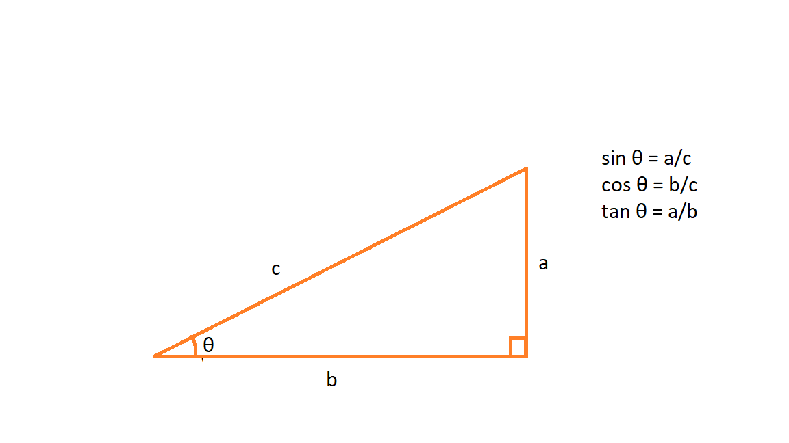
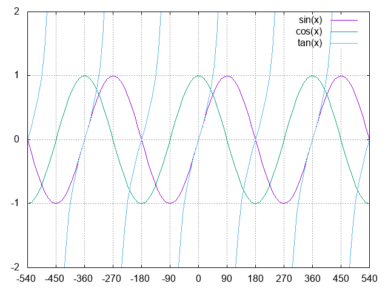

Trigonometry for Game Develepment
Theo McGee
Right Angle and Trigonometric Functions

Sine as a Function of Theta
The left picture shows theta as it increases from 0 degrees to 360 degrees.
The right picture shows the sine of theta, the X-axis is theta and the Y-axis is the sine of theta.
Press any key to start/stop animation.
Sine, Cosine, and Tangent Waves

Using Sine Waves to Smooth the Movement of Objects
Sine waves are used to control smooth movements of objects.
The top robot moves at a constant speed and the movement is not smooth.
The movement of the top robot is controlled by the following code:
if (x == 500 | x == 0) {
direction *= -1
}
x += direction * 5;
The bottom robot uses a sine wave so it moves faster in the middle and slower near the edges. It is controlled by the following code:
var x2 = 250 * Math.sin(time * 0.5 * Math.PI) + 250;
time += 0.02;
Press any key to start/stop animation.
Using Polar Coordinates for Circular Movement
- On a computer screen, the position of an object uses cartesian coordinates(x, y)
- Objects with circular movement is more easily described in polar coordinates (radius and the angle)
- You can translate the polar coordinates to cartesian coordinates.
- x = radius * cosine(angle)
- y = radius * sine(angle)
Press any key to start/stop animation.
❮
❯